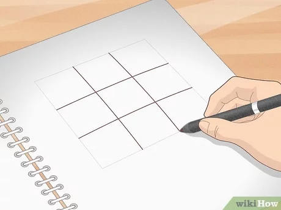

How to Play Tic Tac Toe
Tic-tac-toe is a fun game that you can play any time and anywhere as long as you have a piece of paper, a pencil, and an opponent. Tic-tac-toe is a zero-sum game, which means that if both players are playing their best, then neither player will win. However, if you learn how to play tic-tac-toe and master some simple strategies, then you'll be able to not only play but win the majority of the time. If you want to know how to play tic-tac-toe,then see Step 1 to get started.

1. Draw the board
First, you have to draw the board, which is made up of a 3 x 3 grid of squares. This means it has three rows of three squares. Some people play with a 4 x 4 grid, but that is for more advanced players, and we will focus on the 3 x 3 grid here.
2. Have the first player go first.
Though traditionally, the first player goes with "X", you can allow the first player to decide whether to go with "X"s or to go with "O"s. These symbols will be placed on the table, in an attempt to have three of them in a row. If you're going first, then the best move you can make is to move into the center. This will maximize your chances of winning since you'll be able to create a row of three "X"s or "O"s in more combinations (4) this way than if you chose a different square.
3. Have the second player go second
After the first player goes, then the second player should put down his symbol, which will be different from the symbol of the first player. The second player can either try to block the first player from creating a row of three or focus on creating their row of three. Ideally, the player can do both.
4. Keep alternating moves until one of the players has drawn a row of three symbols or until no one can win
The first player to draw three of their symbols in a row, whether it is horizontal, vertical, or diagonal, has won tic-tac-toe. However, if both players are playing with optimal strategy, then there's a good chance that no one will win because you will have blocked all of each other's opportunities to create a row of three.
5. Keep practicing
Contrary to popular belief, tic-tac-toe isn't purely a game of chance. Some strategies can help you optimize your skills and to become an expert tic-tac-toe player. If you keep playing, you'll soon learn all of the tricks to make sure you win every time -- or, at least, you'll learn the tricks to make sure you never lose. It is like 0's and x's.

Created by Saud 💓 Ansari